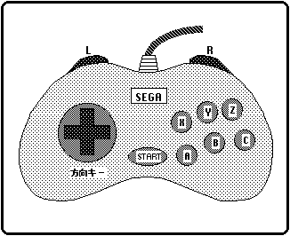
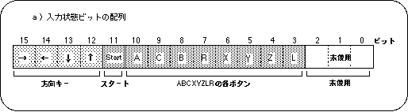
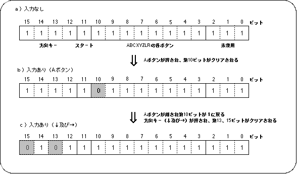
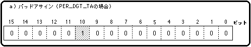
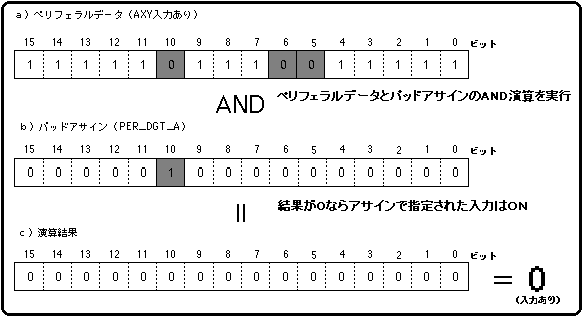

★SGL User's Manual
★PROGRAMMER'S TUTORIAL
★SGL User's Manual
★PROGRAMMER'S TUTORIAL
本章では、セガサターンのデータ入力用デバイスの認識法と実際の動作を、セガサターンの代表的な入力用デバイスであるセガサターンＰＡＤを用いて解説します。
セガサターンＰＡＤには４つの方向を表す方向キー、ＡＢＣＸＹＺの各ボタン、コントローラ上部にあるＬＲボタン及びスタートボタンが入力装置として存在します。
これらコントローラの各入力装置を用いて入力されるデータが、どの様にセガサターン内部で判断されているかを、サンプルプログラムと共に解説していきます。
セガサターンで主に使用されるデータ入力用デバイスは、セガサターンＰＡＤと呼ばれる、本体付属のコントロールＰＡＤです
セガサターンＰＡＤは、４方向を指すように配置された方向キー、スタートボタン、ＡＢＣボタン、ＸＹＺボタン、ＬＲボタンで構成される入力デバイスです。
図9-1 入力用デバイス例（セガサターンＰＡＤ）

属 性 | 名 称 | 入 力 構 成 | 備 考 |
|---|---|---|---|
| デジタル | セガサターンPAD | 方向キー、スタート、８ボタン | セガサターン標準パット |
| セガサターンマウス | XY移動量、スタート、３ボタン | マウス移動量は、絶対値としてデータ格納 | |
| メガドラ３ボタンパット | 方向キー、スタート、３ボタン | セガタップで接続可能 | |
| メガドラ６ボタンパット | 方向キー、スタート、６ボタン | セガタップで接続可能 | |
| アナログ | アナログジョイスティック (ミッションスティック) | 方向レバー、スタート、８ボタン | 移動量は、符号なしA/D出力の絶対値 |
| 特殊 | セガサターンキーボード | IBMキーボードとの互換性あり | |
| 補助装置 | セガサターン６Ｐマルチタップ | コネクト数６ | |
| セガタップ | コネクト数４ | メガドラPADの接続に使用 |
セガサターンＰＡＤは次のようなビットの集合として処理されます。
| bit7 | bit6 | bit5 | bit4 | bit3 | bit2 | bit1 | bit0 | |
|---|---|---|---|---|---|---|---|---|
| ペリフェラルID | ０ | ０ | ０ | ０ | ０ | ０ | １ | ０ |
| 1st DATA | → | ← | ↓ | ↑ | Start | Ａ | Ｃ | Ｂ |
| 2nd DATA | Ｒ | Ｘ | Ｙ | Ｚ | Ｌ | １ | １ | １ |
図9-2 セガサターンＰＡＤの入力状態ビット配列（16bit表示）

図9-3 入力状態ビット列の変化（セガサターンＰＡＤ）

● PerDigital構造体の定義内容 ●
typedef struct{ /* デジタルデバイス */
Uint8 id; /* ペリフェラルID */
Uint16 data; /* 現在のペリフェラルデータ */
Uint16 push /* 押されたスイッチのデータ */
Uint16 pull /* 離されたスイッチのデータ */
}PerDigital;
data：16bit長のペリフェラルデータ（現在のビット状態を示す） push：16bit長のペリフェラルデータ（入力が実行された瞬間のみビットを変化させる） pull：16bit長のペリフェラルデータ（入力が解除された瞬間のみビットを変化させる） id ：デバイスのペリフェラルIDを示す8bitのデータ列
注意
ペリフェラルに関する詳細は、“HARDWEAR MANUAL vol.1”及びシステム付属のヘッダファイル“sl_def.h”を参照してください。
● パットアサイン ● #define PER_DGT_KR (1<<15) /* 方向キー（→） */ #define PER_DGT_KL (1<<14) /* 方向キー（←） */ #define PER_DGT_KD (1<<13) /* 方向キー（↓） */ #define PER_DGT_KU (1<<12) /* 方向キー（↑） */ #define PER_DGT_ST (1<<11) /* スタートボタン */ #define PER_DGT_TA (1<<10) /* Ａボタン */ #define PER_DGT_TC (1<<9) /* Ｃボタン */ #define PER_DGT_TB (1<<8) /* Ｂボタン */ #define PER_DGT_TR (1<<7) /* Ｒトリガー */ #define PER_DGT_TX (1<<6) /* Ｘボタン */ #define PER_DGT_TY (1<<5) /* Ｙボタン */ #define PER_DGT_TZ (1<<4) /* Ｚボタン */ #define PER_DGT_TL (1<<3) /* Ｌトリガー */
図9-6 パッドアサインの内容（PER_DGT_TAの場合）

図9-7 アサインデータを用いた入力状態の確認

/*----------------------------------------------------------------------*/
/* Pad Control */
/*----------------------------------------------------------------------*/
#include "sgl.h"
#include "sega_sys.h"
#define NBG1_CEL_ADR ( VDP2_VRAM_B1 + 0x02000 )
#define NBG1_MAP_ADR ( VDP2_VRAM_B1 + 0x12000 )
#define NBG1_COL_ADR ( VDP2_COLRAM + 0x00200 )
#define BACK_COL_ADR ( VDP2_VRAM_A1 + 0x1fffe )
#define PAD_NUM 13
static Uint16 pad_asign[] = {
PER_DGT_KU,
PER_DGT_KD,
PER_DGT_KR,
PER_DGT_KL,
PER_DGT_TA,
PER_DGT_TB,
PER_DGT_TC,
PER_DGT_ST,
PER_DGT_TX,
PER_DGT_TY,
PER_DGT_TZ,
PER_DGT_TR,
PER_DGT_TL,
};
extern pad_cel[];
extern pad_map[];
extern pad_pal[];
extern TEXTURE tex_spr[];
extern PICTURE pic_spr[];
extern FIXED stat[][XYZS];
extern SPR_ATTR attr[];
extern ANGLE angz[];
static void set_sprite(PICTURE *pcptr , Uint32 NbPicture)
{
TEXTURE *txptr;
for(; NbPicture-- > 0; pcptr++){
txptr = tex_spr + pcptr->texno;
slDMACopy((void *)pcptr->pcsrc,
(void *)(SpriteVRAM + ((txptr->CGadr) << 3)),
(Uint32)((txptr->Hsize * txptr->Vsize * 4) >> (pcptr->cmode)));
}
}
static void disp_sprite()
{
static Sint32 i;
Uint16 data;
if(!Per_Connect1) return;
data = Smpc_Peripheral[0].data;
for(i=0;i<PAD_NUM;i++){
if((data & pad_asign[i])==0){
slDispSprite((FIXED *)stat[i],
(SPR_ATTR *)(&attr[i].texno),(ANGLE)angz[i]);
}
}
}
void ss_main(void)
{
slInitSystem(TV_320x224,tex_spr,1);
slTVOff();
set_sprite(pic_spr,1);
slPrint("Sample program 9.1" , slLocate(9,2));
slColRAMMode(CRM16_1024);
slBack1ColSet((void *)BACK_COL_ADR , 0);
slCharNbg1(COL_TYPE_256 , CHAR_SIZE_1x1);
slPageNbg1((void *)NBG1_CEL_ADR , 0 , PNB_1WORD|CN_12BIT);
slPlaneNbg1(PL_SIZE_1x1);
slMapNbg1((void *)NBG1_MAP_ADR , (void *)NBG1_MAP_ADR , (void *)NBG1_MAP_ADR , (void *)NBG1_MAP_ADR);
Cel2VRAM(pad_cel , (void *)NBG1_CEL_ADR , 483*64);
Map2VRAM(pad_map , (void *)NBG1_MAP_ADR , 32 , 19 , 1 , 256);
Pal2CRAM(pad_pal , (void *)NBG1_COL_ADR , 256);
slScrPosNbg1(toFIXED(-32.0) , toFIXED(-36.0));
slScrAutoDisp(NBG0ON | NBG1ON);
slTVOn();
while(1) {
disp_sprite();
slSynch();
}
}
| 転 送 先 | ||||
|---|---|---|---|---|
| インクリメント | デクリメント | 固定 | ||
| 転 送 元 |
インクリメント | Sinc_Dinc_Byte | Sinc_Ddec_Byte | Sinc_Dfix_Byte |
| デクリメント | Sdec_Dinc_Byte | 禁止 | Sdec_Dfix_Byte | |
| 固定 | Sfix_Dinc_Byte | Sfix_Ddec_Byte | 禁止 | |
関数型 | 関 数 名 | パ ラ メ ー タ | 機 能 |
|---|---|---|---|
| void | slDispSprite | FIXED *pos,ATTR *atrb,ANGLE Zrot | 位置・スケール・表示角を指定してスプライト表示 |
| void | slPutSprite | FIXED *pos,ATTR *atrb,ANGLE Zrot | 透視変換に合わせてスプライト表示 |
| void | slSetSprite | SPRITE *parms,FIXED Zpos | スプライトデータをハードウェアに転送するためのバッファにセット |
| void | slDMACopy | void *src,void *dst,Uint32 cnt | AからBにCだけDMA転送(同一バス転送可能) |
| void | slDMAWait | void | DMA転送終了するまで待機 |
| void | slDMAXCopy | void *src,void *dst,Uint32 cnt,Uint16 mode | AからBにCだけDの転送モードでDMA転送(同一バス転送可能) |
★SGL User's Manual
★PROGRAMMER'S TUTORIAL